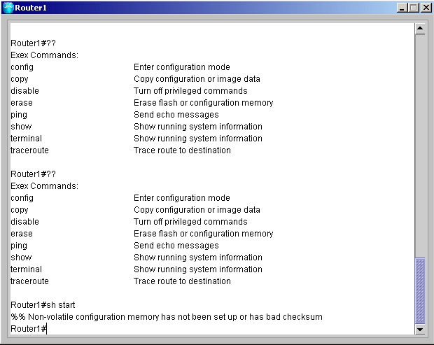
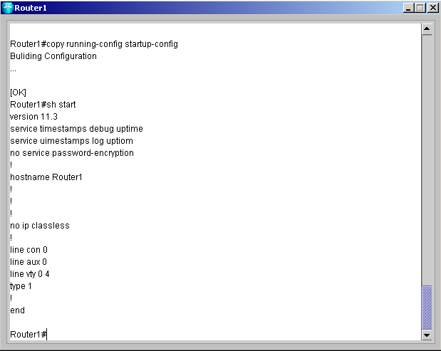
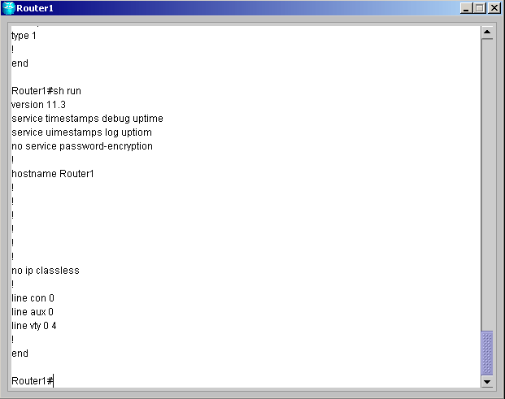

| Commands for starting and saving configurations | ||
| การทดลองนี้ทำเพื่อบันทึกค่าที่เราตั้งค่าไว้ทั้งหมด
และโหลดค่าที่ตั้งไว้ออกมา |
||
| 1. ล็อกอินเข้าเราเตอร์ที่ต้องการ
หลังจากนั้นเข้าสู่ Privilege โหมดโดยพิมพ์คำสั่ง En หรือ Enable แล้วกด Enter |
||
| 2. สำหรับการดูคอนฟิคที่เก็บอยู่ใน NVRAM จะใช้คำสั่งsh start หรือ show startup-config แล้วกด Enter ถ้าไม่มีเก็บไว้จะแสดงข้อความ error | ||
|
 |
||
| 3. ทำการบันทึกค่าที่ตั้งไว้ใน NVRAM ที่เรียกกันว่า startup-config ให้พิมพ์ copy run start หรือ copy running-config startup-config แล้วกด Enter | ||
| 4. พิมพ์ sh start หรือ show start แล้วกด Enter | ||
|
 |
||
| 5. พิมพ์ sh run หรือ show run แล้วกด Enter | ||
|
 |
||
| 6. พิมพ์ erase start แล้วกด Enter | ||
| 7. พิมพ์ sh start แล้วกด Enter จะเจอ ข้อความ error | ||
|
สำหรับโหมดการทำงานทั้งหมดของเราเตอร์สามารถดูได้ที่
Command
|
||